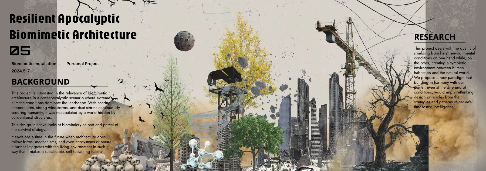
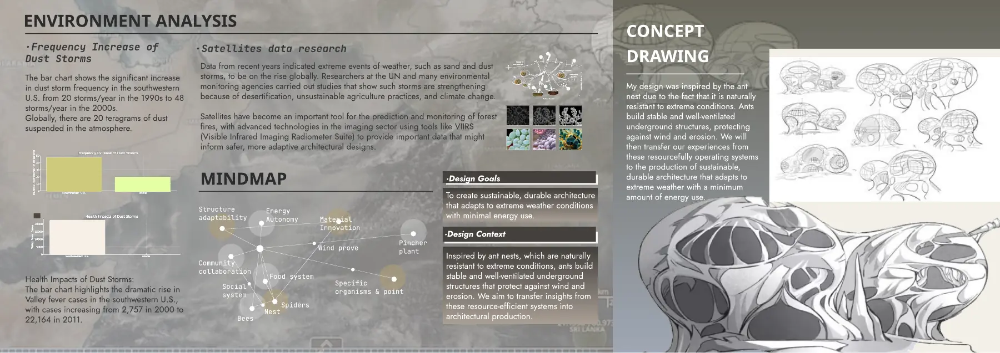
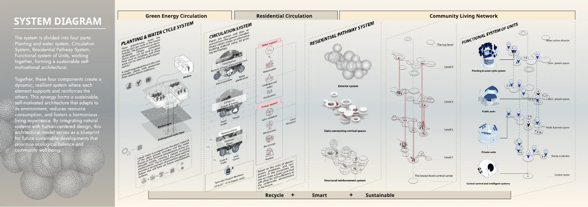
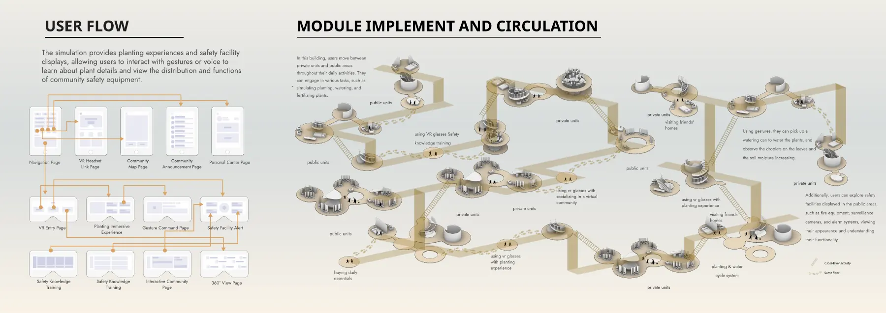
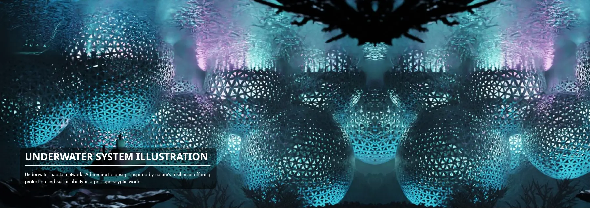
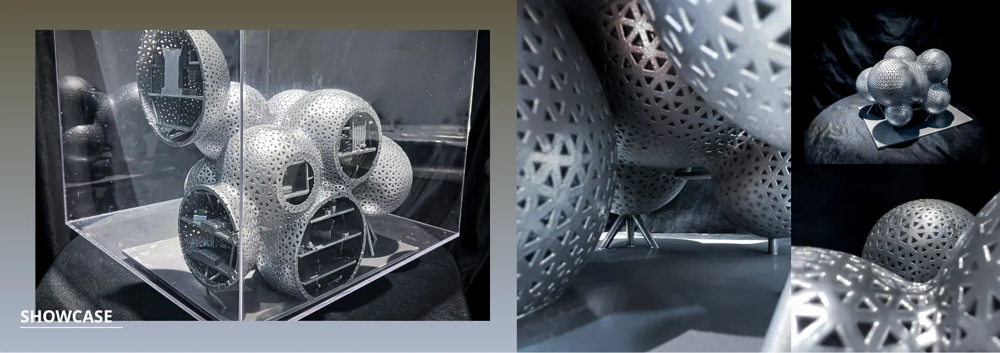

Brief
I researched the rise in dust storms and desertification and studied how ant nests stay ventilated and stable underground, then used that as the basis for a self-sustaining community.
Process
- Planned the community as connected systems: planting and water cycles, residential circulation, and shared units.
- Sketched VR user flows for planting and safety training. These are flow designs, not built software.
- Built structural models and renderings.
Portfolio pages











